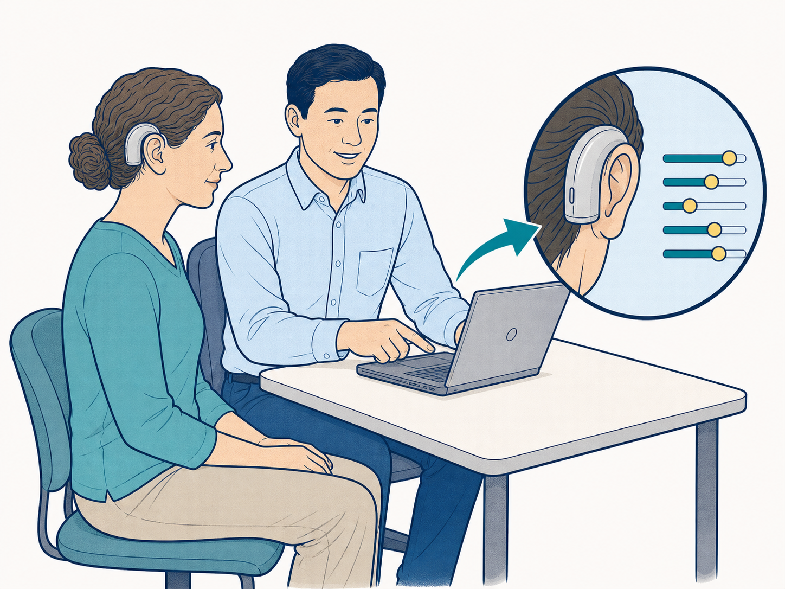

Step 1 of 2
Heal first
Once the surgery site has healed, your care team will bring you back for your first programming visit.
What to remember Healing comes first. Programming is the next step.
Private prototypeUnverified draft · not for patient use
What happens next
Follow two short steps. The picture changes as you move through the guide.
Step 1 of 2
Once the surgery site has healed, your care team will bring you back for your first programming visit.
What to remember Healing comes first. Programming is the next step.

Step 2 of 2
An audiologist—a hearing specialist—programs the speech processor you wear outside your ear.
The settings are adjusted for your needs.
What to remember This visit personalizes how your processor is set up.